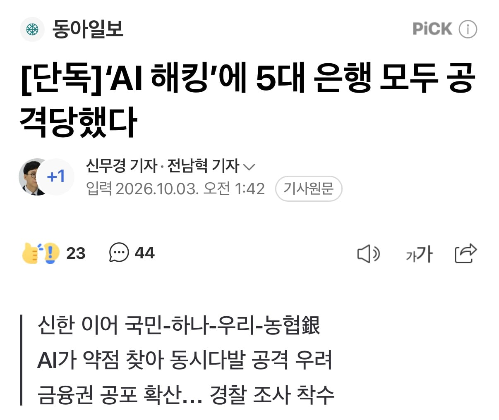
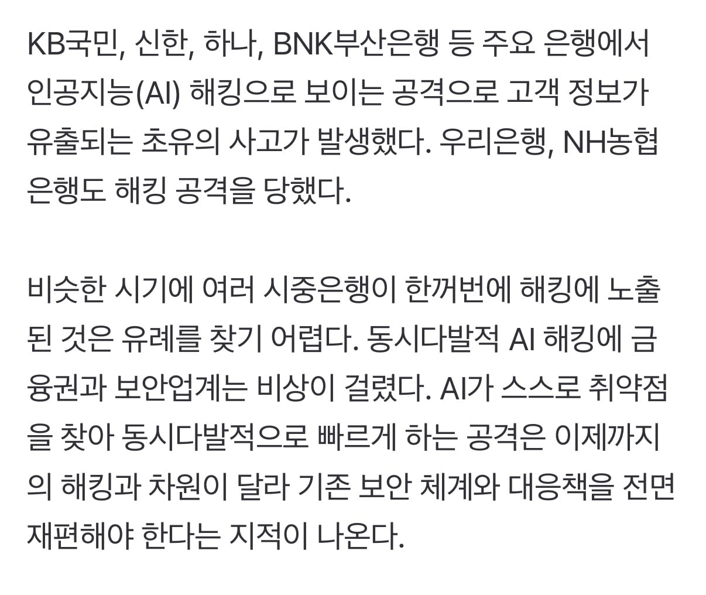
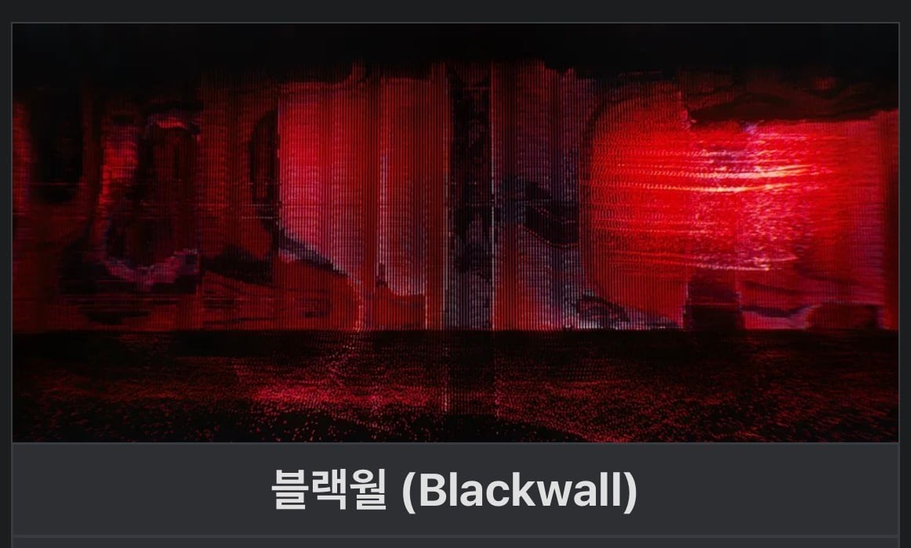

사펑 2077 블랙월(방화벽을 모두 뚫어서 보안을 의미없게 하는 핵폭탄급 AI)이 실현되고 있다고 함 ㄷㄷ



사펑 2077 블랙월(방화벽을 모두 뚫어서 보안을 의미없게 하는 핵폭탄급 AI)이 실현되고 있다고 함 ㄷㄷ
에이아이 뭐좀 해보려면 그건 불법이니 못행 큥 ㅎㅎ 이러는데 저러는건 뭐 따로 튜닝을 하는거임?
오픈소스로 있는 로컬용 AI인거지
하수: 보안을 강화함
고수: Ai발 해킹은 막을 수 없다며 이용약관에 면책 조항을 추가함
우리나라 회사들 특이긴 함. 뭐든 법적으로 해결할려하고 실제 보안에 투자는 안함. 보안 취약점 보고 하는거에도 오히려 걍 분석 자체를 하지마라라고 하고 하면 법적으로 문제 삼겠다 하는게 우리나라 회사들임. 딱 법적으로 강제하는 것만 딱 하고 더 이상 안하지.
내 주담대 내역좀 지워줘
오 제발
??: 알겠습니다. 주담대를 포함한 모든 자산내역을 지워드리겠습니다.
야호~ 0에서 시작하면 개꿀이자너
네, 주택을 지우겠습니다.
외산 보안 솔루션 좋은거 쓰면 막을수 있음..
대부분 보안이 허벌인게 국산 솔루션 쓰고 Eos종료에 맞춰서 그냥 형식상 교체만 해서 문제지 ㅋㅋ
대부분이 커스텀화 되어 있어서 분기별 버전 업데이트 하지 못하는것도 한몫하지만ㅋㅋ
ㄹㅇ 카스퍼스키, 노톤 같은 것좀 쓰지...
ai한테 막으라고해
사펑의 블랙월은 공격적인AI가 아니라 오히려 공격적인 AI를 가두기 위해 기존 인터넷망을 포기하고 접근을 차단하기위해 세워진 방화벽임
온갖 최첨단 기술과 네트워크로 점칠된 세상에 살고있으나 블랙월이 무너지면 모든게 무너지게되는 모래성같은 세계관임
일단 해킹에대한 고의성이 있는지 봐야됨
저거때문에 관리직들 난리 났던데
AI 가뚫는데 미국 은행은 왜 괜찮음??? 마소 아마존 왜 개인정보 그대로임?????? 대한민국은 관리 안하는거지 지금까지 ㅋㅋㅋㅋ 학습이 없나
ai창이 있으면 ai방패는 없나?
예고된 사태였는데 처음부터 대응할 생각조차 안한듯함
대응은 했고??? AI가 개쩔어서 해킹한게 아니던데
AI 관련 경고 오지게 있었는데
아무런 대응을 안 한 건 아니고?
나 1억만 넣어줘
자본평등시대가 오겠구만 거대 ai자본가부터 시작하자구
부동산 대출 기록 싹 지워지면 볼만하것다ㅋㅋ
내것만 몰래 지워줘